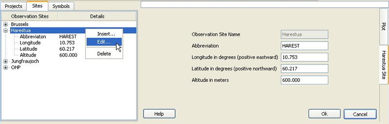

QDOAS Sites Properties

In the Observation Sites page, a list of observation sites can be specified by their location coordinates. QDOAS applies the following conventions :
- longitudes are positive eastwards; negative westwards;
- latitudes are positive northwards; negative southwards.
For ground-based measurements, information on the observation site can help to [re-]calculate the solar zenith angle as far as the measurement date and time are correct (see the Instrumental page of Projects Properties). The longitude is also accounted to correctly select the reference spectrum of the day using the local time instead of the UT time in the case fractional days and times given in UT are distributed on two days (for example, for China).
For satellite measurements, this page can be used to define a list of overpasses (see the Selection page of Project properties). In both cases, the Abbreviation is used as prefix of the name of the output files when the automatic creation of the output file name is requested.
The Altitude information is just for the user.